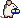

Support & feedback
Email: theseus@unru.sh
Report a bug or ask for a feature: GitHub issues
Before you write
Theseus is a client. Your account, chats, files, models and their answers live on the Open WebUI server you connect to, which is run by its admin, not by the developer of Theseus. Please ask your server's admin about:
- creating, approving or deleting your account (Open WebUI lets only admins delete accounts),
- which models you can use, their limits and what they may answer,
- content you reported in the app (Report sends it to the server's admins),
- how your data is kept on the server.
In the app, Settings › Data & privacy shows who runs your server and how to reach them.
Common questions
I can't sign up in the app. Theseus signs in to existing accounts only. Create your account in the server's web interface, or ask its admin, then sign in in Theseus.
How do I report a harmful response? Tap the thumbs-down under it and turn on Report as harmful or offensive. In chats without rating, tap the flag. The report goes to the server's admins.
How do I remove my data from this device? Settings › Data & privacy › Remove from this device signs you out and deletes the account's local copy. Clear cache keeps you signed in and deletes only the local copy of your chats.
Which servers work? Open WebUI 0.12 or newer, reachable over HTTPS (or on your local network).